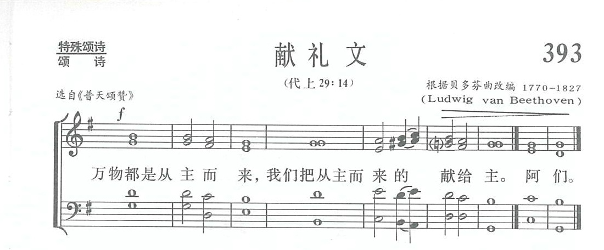

|
|
讚美詩(新編) 第393首《獻禮文》 |
||||
|
|
萬物都是從主而來， |
||||
|
https://www.zanmeishige.com/tab/14066.html?songbook=1&index=393

|
|||||
|
|
|
||||


| Text: | All Things Come of Thee, O Lord |
| Tune: | [All things come of Thee, O Lord] |
| Composer: | Ludwig van Beethoven, 1770-1827 |
All things come of thee, O Lord
Tune: [Chant] (Beethoven 33211)Published in 104 hymnals
What is the offertory hymn?
https://www.thelittleaussiebakery.com/what-is-the-offertory-hymn/#What_is_the_offertory_hymn
The 1662 Book of Common Prayer of the Church of England includes “offertory sentences” that are to be read at this point. Current practice in Anglican churches favours the singing of a congregational hymn (the “offertory hymn”) or an anthem sung by the choir, and often both.
What do you give for offertory?
6 Gifts You Can Prepare for Offertory
- Flowers. Pick flowers in your wedding colors.
- Candles. These symbolize the illumination of your path as a unified couple.
- Fruits. A basket of fruits is a gift you can easily offer during mass.
- Grocery items.
- Money.
- Host and church wine.
What is the meaning of the offertory?
English Language Learners Definition of offertory : the offering of bread and wine to God as part of the Communion ceremony during a Christian church service. : a verse from a psalm that is said or sung at the beginning of the Offertory.
What is liturgical music examples?
Liturgical music therefore would be a music that lives out the liturgy. They are basically in form of chants for instance the Gregorian chants, Sacred Polyphony, Sacred Music for the Organ and other approved instruments and Sacred Popular music approved by the Church.
第393首 献礼文 OFFERTORY SENTENCES _惠蒂尔
经文：“万物都从你而来，我们把从你而得的献给你”(代上29：l4)。
这首《献礼文》是历代志上第29章第14节的经文，是从大卫临死之前，所罗门即位时所献的大祷词中选出来的。
所用曲调是根据贝多芬(事略参阅第18首)曲改编，调名为《献礼文(OFFERT0RY SENTENCES)》，唱到最后应渐弱。词曲选自《普天颂赞》(旧版)第5 3 8首。
该诗本还有第三式供选用的词和曲，其英文原词是美国诗人惠蒂尔(事略参阅第5 O首)写的，经圣公会华北教区以前的主教鄂方智改述，曾经在北京宣内南沟沿圣公会座堂经常唱用，特介绍于下：
今日所献捐项礼物，
从主而来还献与主。
哈利路亚，哈利路亚，
惟靠我主基督圣名，
恳求圣父悦纳收领，
哈利路亚，哈利路亚，
哈利路亚，哈利路亚，
哈利路亚。
调用《新编》第8首《众圣颂扬歌》，该曲调原载于1623年出版的德国圣诗。